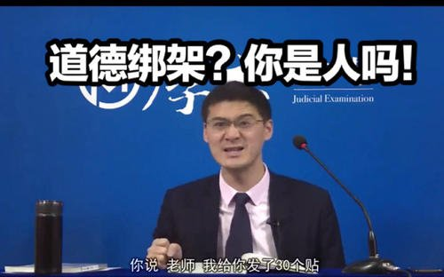

罗翔
湖南耒阳人，北京大学法学博士。现任中国政法大学刑法学教授，刑法学研究所所长，华一律师事务所兼职律师。其主要研究领域为刑法学、刑法哲学、经济刑法、性犯罪。在学校向本科生和研究生开设刑法总则、刑法分则、经济刑法、刑法研讨等多门课程
履历
1995年，罗翔进入中国青年政治学院学习，并于1999年获得法学学士学位。随后前往中国政法大学研究生院，于2002年获得刑法学硕士学位。2005年于北京大学法学院毕业，获得刑法学博士学位。
毕业后，罗翔回到中国政法大学职教，期间于2009年至2010年前往美国加州伯克利分校交流访问，2013年至2014年前往杜克大学访问。在校任职期间多次获得中国政法大学学生欢迎的十大教师称号，2018年入选法大首届研究生心目中的优秀导师。
2020年初，因其《罗翔讲刑法》系列视频中讲解法考知识点所举的例子幽默风趣，形成网络爆红。其上课视频截图所制作的表情包在网络上疯传，并被称为法王。3月9日，受邀请正式入驻B站，一天粉丝破百万。
学术作品
独著
- 《刑法学总论》
- 《刑法中的同意制度》
- 《冲出困境的罪刑法定原则》
- 《中华刑罚发达史》
主要文章
-
1.狂热的魔咒理性的自负——《自由·平等·博爱》读后及对刑法学研究方法的反思，《政法论坛》2018年第5期
-
2.法益理论的检讨性反思——以敲诈勒索罪中的权利行使为切入，《中国刑事法杂志》2018年第2期
-
3.论行政权对司法权的侵蚀——以刑事司法中行政鉴定的乱象为切入，《行政法学研究》2018年第1期
- 4.犯罪构成与证明责任，《证据科学》2016年第4期
-
5.论打击错误的处理原则——法定符合说之检讨，《暨南学报》2014年第8期
- 6.结果无价值论之检讨，《法学杂志》2014年第2期
- 7.论人道主义刑罚理论，《暨南学报》2013年第7期
- 8.刑法第306条辨正，《政法论坛》2013年第3期
- 9.从法益到风俗——性刑法的惩罚边界，《暨南学报》2012年第1期
-
10.论对同意的认识错误——以性侵犯罪中的假想同意切入，《清华法学》2010年第1期
- 11.论财产犯罪中对数额的认识错误，《法律适用》2009年第2期
- 12论欺诈型强奸，《中南大学学报》2007年第4期
- 13.大陆与澳门罪刑法定原则之比较，《中南大学学报》2007年第2期
- 14.论法条竞合的兜底作用，《法律适用》2006年第7期
- 15.刑事一体化视野下的死刑复核制度，《中国司法》2006年第7期
-
16.与精神病人发生性行为构成犯罪的惩罚原则，《人民司法》2006年第3期
- 17.英国性犯罪视角中严格责任之考察，《比较法研究》2005年第3期
- 18.吸收犯之再认识，《中国刑事法杂志》2003年第5期
-
19.犯罪构成理论的创造性转换，《中国青年政治学院学报》2003年第3期
- 20.法条竞合的另一种诠释，《刑法评论》第4卷
-
21.“疏忽强奸的一种论证：对男权主义强奸法的检讨性反思”，《刑事法评论》第15卷
- 22.“回溯与前瞻——女性性自治权的刑法保护”，《河北法学》2008年12期
生活照
